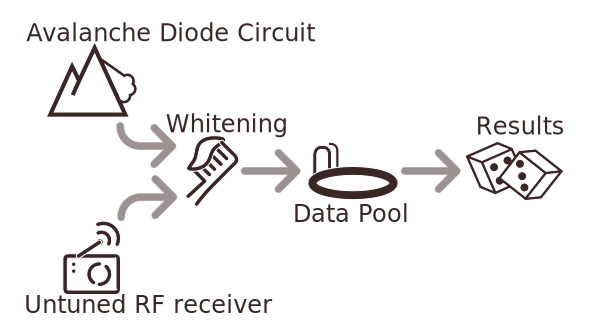
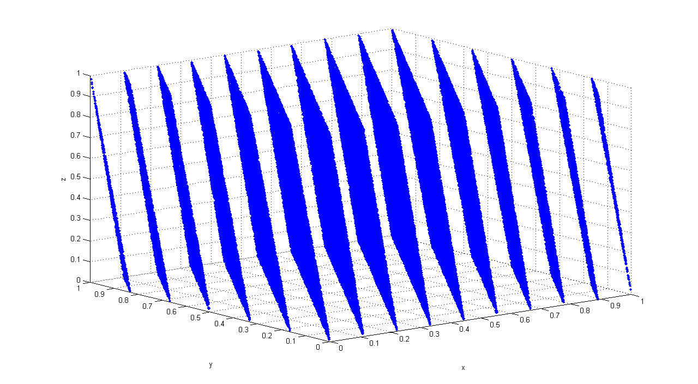

OneRNG
How to be unpredictable in a deterministic world
AusCERT 2015
Jim Cheetham
OneRNG.info
Information Security Office, University of Otago, NZ
<jim.cheetham@otago.ac.nz>
OneRNG
Abstract:
- Project Motivation
- Technical Solution
- Implementation
OneRNG Project
Motivation
- Security requires secrets
- Secrets need to be unpredictable
- Computers are deterministic
- Existing entropy sources are inadequate
Security requires secrets
Examples of secrets in computer security:
- Pass
wordsphrases - Encryption keys - symmetric or public/private
- Session identifiers
- Address Space Layout Randomisation
Secrets need to be
unpredictable
- Today is Wednesday June 3rd. If my daily password is "Wed3", what might it be tomorrow?
- My password is an English word; what is the chance that the second letter is a vowel? (27/53 ≅ 50%)
- When my server is rebooted, the first TCP sequence number is "1". What will the second one be?
Computers are
deterministic
Given the same input conditions, we require hardware and software to produce the same output.
- Pseudo-Random Number Generators - PRNG
Deterministic Random Bit Generators - DRBG
Cryptographically Secure PRNG - CSPRNG - These approximate true random numbers. Examples: Middle Square, RANDU, Mersenne Twister, Dual_EC_DRBG
- Inherent problems: Periodicity, Output Artifacts, Provability
- True Random seed values are required
Existing entropy sources are inadequate
Measuring the environment external to the computer to achieve local unpredictability
- Keyboard & mouse activity
- Hardware interrupt timing
- Device drivers may provide environmental data
- Specialist devices are untrustable e.g. RdRand
OneRNG
Technical Solution
- OneRNG is an Open Hardware device
- It is designed to be verifiable, not trusted
- It is a low-cost, effective solution to the problem
It has a Tin-Foil Hat

It has a Tin-Foil Hat

Entropy Collector
By default, OneRNG measures unpredictable physical events
from an avalanche diode circuit
and returns the results — but there are biases
Environmental Noise
You can also enable the RF monitor to get another source of entropy data with a higher quality — but at the cost of a little paranoia
Whitened data
This raw data is then whitened through a CRC16 function which makes it good enough to be fed into your system
There is an AES hardware module available, but it is not used by the default firmware (trust issues)
Keep topping up the pool
There's a 7.5KB pool of data that is kept full
New data is mixed in over the old data all the time
A LED on the board tells you when the pool is full
and warns you when it is getting empty
Output
The output from OneRNG should be used as an Entropy input to your existing systems (preferably OS)
We provide ~7.5 bits of entropy per byte of data
The flow of data
The user controls the choice of sources
The user controls the use of Whitening
The user controls where the results go
No Trust Needed
- You should not trust this device — you do not need to trust this device
- You should VERIFY that what you physically hold is what you need to have
- (Yes, we manufacture them in China)
How to verify
the hardware
- Remove the Tin-Foil Hat (ours, not yours)
- Identify the components
- Identify the connections, top and bottom
- Research the one complex component, the CC2531 chip
- See how much storage it has (256KB or 128KB)
How to verify
the software
- Plug the device into a machine
- Dump the firmware into a file
- Confirm the data is the full 256KB
- Validate the GPG signature
- Confirm the data is ‘uncompressible’
Scripts on your server should do steps 2,3 & 4 on startup
Why verify?
- The hardware you received conforms with the description
- The firmware that is used matches the source
- Tampering should be detectable
OneRNG Implementation
How do we go from a design to an actual product?
- Hand-made beta units
- Fundraising via Kickstarter
- Bulk-buying components
- Develop construction-line
- Build units (under supervision)
- Provide online store
- Profit!!!
Beta units - v1.0
- Moonbase Otago - Paul Campbell
- Re-using existing Zigbee projects
- Built in Dunedin (small Pick & Place machine)
- Hand-finished
- Sent to crypto and hardware people that we know for comment
To get volume production set up, we used Kickstarter with an NZD$10,000 target over 45 days
- 50% funded after 2 days
- 100% funded after 6 days
- 200% funded after 18 days
- 485% funded at close : NZD$48,551
Rewards Options
We offered combinations of:
- NZD $50 - a single OneRNG from bulk manufacturing
- NZD $90 - a device programmer unit
- NZD $110 - a single hand-built unit
Setting up a
construction-line
- Shenzen has a good 'Western Hacker' vibe (q.v. bunnie Huang et. al.)
- Lots of technically competant suppliers available for each stage
- PCBs are big enough for 24 OneRNGs on a single board; these need cutting
- We built the test equipment, which also programs the units
- An additional image signing stage requires an NZ-based server to generate keys
- Dispatch is direct from Shenzen; this simplifies sales tax
Building OneRNG
in Shenzen
- Paul has just spent 2 weeks in Shenzen
- We had a 5% failure rate (most can be manually fixed)
- We can fulfil the Kickstarter orders
- Next, we sell the excess stock online
Appendix: Linux /dev/random
Why does /dev/random block?
- The NSA-designed SHA-1 was not fully "trusted"
- The blocking behaviour is a defence against this untrusted DRBG
Ted T'so, 2015 “… the paranoiacs were *right* that the NSA had introduced a back-door into a crypto algorithm which they gifted to the civilian world. It just turned out to be DUAL-EC instead of SHA-1.”
- Just use
/dev/urandom:-)
What's the difference between /dev/random and /dev/urandom?
- These are fundamentally the same :-)
- “
/dev/urandomdoesn't block;/dev/randomdoes” - They will behave identically with sufficient entropy
- Use
/dev/urandom - Use
/dev/urandom - Use
/dev/urandom
How does OneRNG help /dev/random?
- Even though you should use
/dev/urandom, not all your legacy code does - OneRNG helps to avoid the need to block
- Therefore systems that use
/dev/randomrun faster?
Appendix: Other RNGs
The more the merrier
- A small quantity of good entropy is enough to improve everything
- But the more independent sources of entropy you have, the better off you are
- As well as OneRNG, please add other sources
Complements to OneRNG
- SW: rtl-entropy from SDR - https://github.com/pwarren/rtl-entropy (Paul Warren, LCA2014)
- HW: USBtrng - http://altusmetrum.org/USBtrng/ (Bdale Garbee/Keith Packard, DebConf 2014)
- SW: Turbid from audio I/O - http://www.av8n.com/turbid/ (John Denker, 2002-date)
- HW: NeuG ("noisy") - http://git.gniibe.org/gitweb/?p=gnuk/neug.git (Yutaka Niibe, DebConf 2014)
Appendix:
PRNG Problems
Middle Square
- First documented by Franciscan Brother Edvin in around 1240-1250 CE
- Re-discovered by John von Neumann, published in 1949
"Any one who considers arithmetical methods of producing random digits is, of course, in a state of sin."
- Unstable output, many pathological seed values
Middle Square
Example with 4-digit seed:
- 1234 - start with a 4 digit seed as the initial input
- 12342 = 01522756 - square and pad to 8 digits with leading 0
- 01522756 - output the middle 4 digits, use this as the next input
- 1234 → 5227 → 3215 → 3362 …
- BUT 0000 → 0000, same for 0100, 2500, 3792, 7600
- Many short cycles: 0540 → 2916 → 5030 → 3009 → 0540
- Seed 1234 hits 0000 after 56 iterations
RANDU
- Designed for the 1960's IBM System/360
- Vj+1 = 65539 . Vj mod 2 31 (V0 must be odd)
- Very fast on the system's limited hardware
- BUT every 3 output values have a strong relationship
RANDU
- 100002 values from RANDU, plotted as 100000 consecutive triples (x,y,z) 
Dual_EC_DRBG
- Published in 2004
- Adopted as a NIST standard (SP 800-90A) in 2007 despite technical reservations
- Exposed in 2013 as backdoored by the NSA as part of “Bullrun” by Edward Snowden
- Exposed in 2013 that RSA Security had been paid US$10 million in 2004 to make Dual_EC_DRBG the default for the RSA BSAFE libraries
- Withdrawn from NIST SP 800-90A in 2014
Q & A
http://onerng.info/
Credits
Presentation resources :-
Software - reveal.js, hosted on Github

Icons used are from The Noun Project, http://creativecommons.org/licenses/by/3.0/us/ licensed
Arrow and Bent Arrow by Thomas Le Bas, Dice by Weston Terrill, Toothbrush, Radio by Joe Harrison, Avalanche by Louis Dawson, Swimming Pool by Sitara Shah, Clock by Nick Green, Guy Fawkes by Christopher T. Howlett, Pac-Man by Luigi Di Capua, Surveillance by Luis Prado, Audit by Miroslav Koša, Skydiving by Jual Pablo Bravo, CPU by iconsmind.com, Certificate by Alex Auda Samora, Incognito by Alen Krummenacher, Layers by Cornelius Danger, Search by Melvin Salas, Infographic by Rob Gill, Seed Packet by Anton Gajdosik (Public Domain)
RANDU visualisation from Wikipedia's RANDU page
OneRNG photos from Jim Cheetham and Paul Campbell